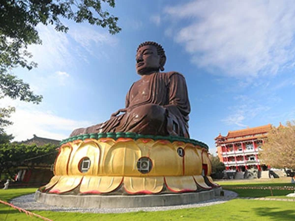
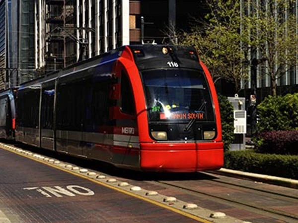

location_city外交部領事事務局全球資訊網-旅遊警示
外交部發布之旅遊警示，係提供國人出國旅行之參考資訊，屬參考性質之建議，與國外旅遊定型化契約條款之適用並無必然關係，亦無強制拘束力，國人仍應自行決定其旅行計畫。國人倘遇旅遊消費爭議而無法解決時，可向中華民國旅行業品質保障協會（地址：台北市長安東路2段78號11樓；電話：2599-5088）或交通部觀光局（地址：台北市忠孝東路4段290號9樓；免費申訴電話：0800-211-734）申訴，請求安排調處。
外交部呼籲國人出國務請提高警覺，倘遇緊急狀況請儘速與我當地駐外館處聯繫
國外旅遊疫情資訊，請參考衛生福利部疾病管制署發布之訊息
陸港澳旅遊警示資訊，請參考大陸委員會發布之訊息（國人赴大陸地區、香港及澳門遇有急難救助事件，請撥打大陸委員會全球資訊網提供之『急難救助電話』求助）
train國內旅遊安全須知
- 出遊前先收集相關交通旅遊資訊，並做好行程規劃與訂房。
- 旅遊裝備要事先準備妥當，並瞭解自己健康狀況，隨身攜帶必備藥物。
- 行車遵守交通規則，並遵照交通指揮人員指揮通行。
- 隨時注意電視廣播報章雜誌有關交通狀況及氣象報導，掌握情況。
- 注意自身旅遊安全，無人管理之地區儘量避免前往，山區注意落石、虎頭蜂、毒蛇、野猴，無救生人員管理之海邊、溪流水域，請勿游泳、戲水。
- 搭乘遊艇，應著救生衣，並拒絕搭超載及無照之船艇。
- 搭乘遊樂設施時，應遵守各項安全規定，聽從服務人員解說及指示，以維護安全。
- 請勿擅自前往危險地區，遵守警告、禁止標誌之規定。

directions_boat國內旅遊安全須知
出門旅遊是一件讓人既期待又有點擔心的事，因為要到一個陌生的地方去接觸陌生的人、事、物。但是，旅遊所創造的價值及帶來的樂趣卻是無價的，也是人生中的最大收穫。因此，我們要如何享受一個既安全又快樂的旅遊？除了要多收集資訊並充分了解「一分錢一分貨」的真諦外，事先的準備工作更是不能忽視。
中華民國旅行業品質保障協會提醒您～至少對下面與旅遊相關的事項上在安排時要格外注意：
旅遊保險
- 出門旅遊請自行投保含海外突發疾病/意外醫療理賠之旅遊平安險。
- 參加旅行社所舉辦團體旅遊，請確認該旅行社依法投保旅行業責任保險及旅行業履約保證保險，並對不足之部分自行加保。
- 如用刷卡付費，請向發卡銀行確認信用卡附加保險之涵蓋範圍。有的僅指搭乘固定班次之大眾交通運輸工具，且保障只及於本人、配偶及未婚子女。
旅遊安排
- 請務必選擇經交通部正式核發旅行業執照之合法旅行社處理及安排國內外旅遊相關事宜。
- 請先行確認護照效期（部分國家要求入境旅客所持護照須具備自入境日起算六個月以上的效期），並辦妥與本行程目的相符之目的（轉機）國簽證。所有證件上之資料及有效期、相片等一定要核對無誤。
- 事前蒐集旅遊目的地之氣候變化、禮俗禁忌、匯率、疫情、政局等資訊，並至銀行結匯適量外幣。（美金最為通用）
- 參加團體旅行，如係第一次前往該地區，務請參加行前說明會或事先充分閱讀說明會資料，以充分了解行程中應注意事項、準備物件及安全須知。
- 常用藥物、證照及貴重物品，務必於旅遊途中隨身攜帶，勿放置於託運的大行李箱。為預防水土不服，宜準備感冒、腸胃、高山反應等基本藥物。
- 如有必要在國外開車，出發前可備相關文件至各地監理機關申辦國際駕照，但務必先充分了解當地駕駛規則。
- 服裝之準備宜舒適大方、易穿脫易吸汗，以適應天氣變化，尤其要準備禦寒衣物。至於防曬油保養乳液及護脣膏等可視行程需要準備之，也請帶一套較正式服裝以備正式場合穿著。
- 出國前宜先確認信用卡可用額度。刷卡付費時，請先核對簽單所列幣別及金額是否正確，勿貿然簽名，也勿讓信用卡離開視界太久。
- 向旅行社支付國內外旅遊團費、國際機票款，或委由旅行社代訂之國內外飯店、車船、門票等旅遊費用時，請向旅行社索取交費憑證－－「旅行業代收轉付收據」。
- 如逢假日出發，一定要留下承辦社的主辦人可隨時連絡得到的家中或公司值班人員電話及手機。
- 預購春節時期出發的團或機位，一定要取得確認之航空公司機位代號，即使簽約時，也最好註明機位代號並將所約定之行程作合約附件。
- 請指定領有合格領隊執照之領隊帶團。
- 旅客本人平日就要注意營養均衡及睡眠充足，出發前勤加運動，以確保健康身體來適應旅途中的勞頓及水土不服。
- 出門在外切記「財不露白」並勿走暗路，也不要隨便脫隊及單獨行動。
